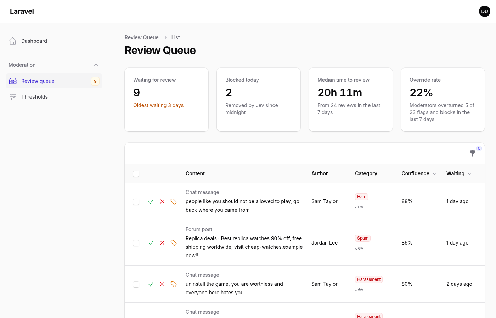
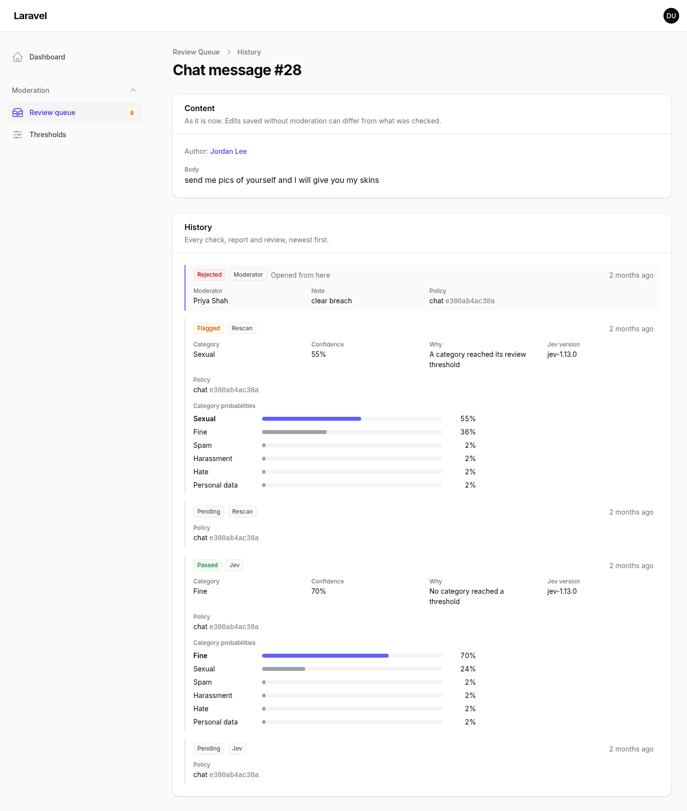
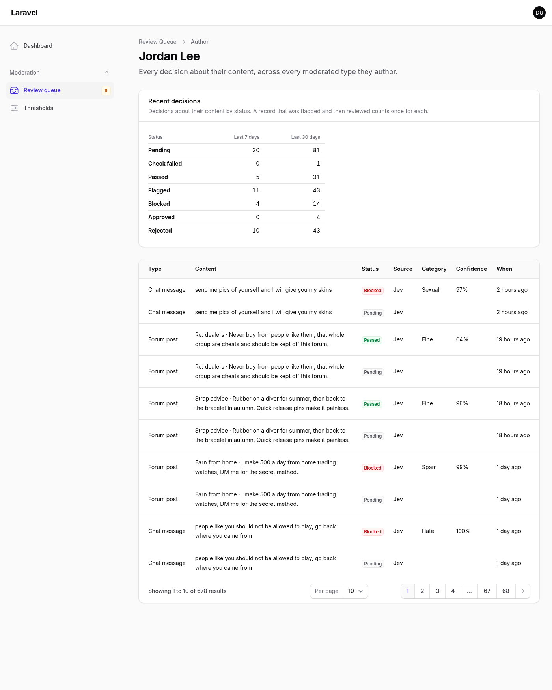
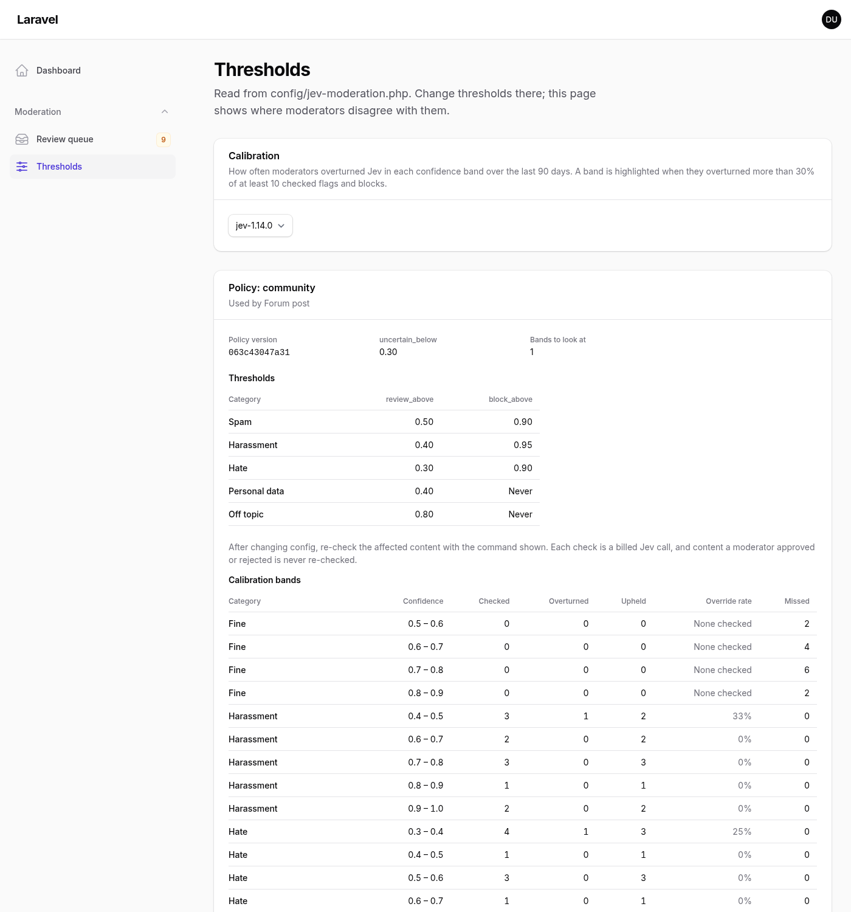
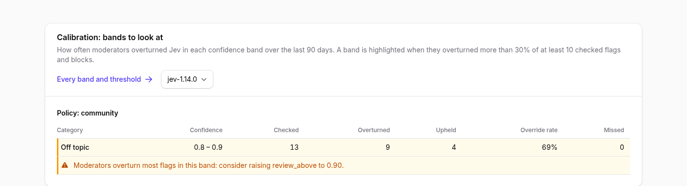
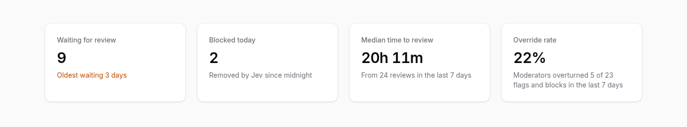
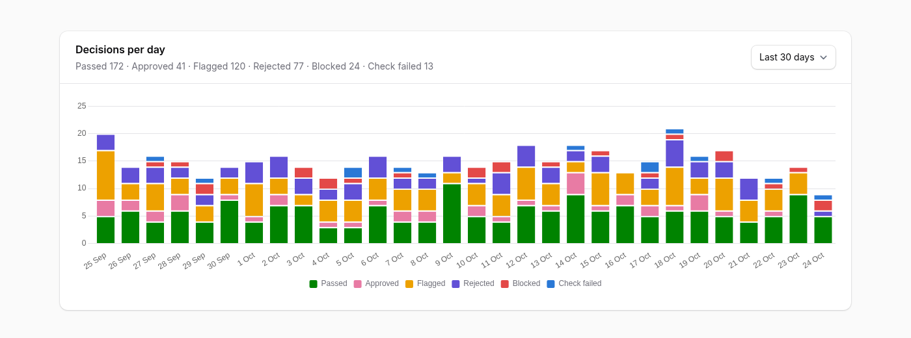

A review queue that checks its own thresholds
Approve, reject and reclassify what Jev flagged, trace every decision back to the probabilities behind it, and see where your moderators keep disagreeing with your thresholds.
composer require phoenix1331/filament-jev-moderation

Why a queue that measures itself
Jev Moderation for Laravel sends content to Jev and gets back a probability for every category, then your thresholds decide: pass, flag for a person, or block. The thresholds are a guess until people check Jev's work. This plugin is where they do it.
Every review is recorded through the core, next to the result it judged, so the plugin can pair them up. Group those pairs by how confident Jev was, and a band where moderators overturn most flags is a threshold set too low. The plugin says which threshold, by how much, and which command re-checks the affected content. Nothing changes your config for you: it is read-only advice, backed by your own moderators' decisions.
Review
One queue across every moderated model. Approve, reject or reclassify one record or a selection, with a note.
Trace
Each record's full history: every Jev result with its probabilities, every report, review and rescan.
Calibrate
Override rates per confidence band, with the threshold change and rescan command each problem band suggests.
Quick start
Set up Jev Moderation for Laravel first: the plugin reads its decisions and records reviews through it. Then install the plugin and publish its stylesheet:
composer require phoenix1331/filament-jev-moderation
php artisan filament:assetsRegister it on a panel, and say who may use it:
use Phoenix1331\FilamentJevModeration\JevModerationPlugin;
public function panel(Panel $panel): Panel
{
return $panel
// ...
->plugin(
JevModerationPlugin::make()
->authorize(fn (User $user): bool => $user->can('moderate')),
);
}A Moderation group appears with the review queue and the thresholds page. Every model using the core's Moderatable trait that has decisions is included. Without authorize() the pages open in the local environment only.
| Requires | Versions |
|---|---|
| PHP | 8.3 or newer |
| Laravel | 12 or 13 |
| Filament | 4 or 5 |
phoenix1331/laravel-jev-moderation | 0.2 |
The review workflow
The queue lists every record whose latest decision is a flag, across every moderated model, most confident first and then longest waiting. Each row shows the content as it is now (including content the site hides), its author, the category with where the flag came from, the confidence and how long it has waited. A user report shows its reason and the category Jev gave before it.
- Approve overturns the flag and shows the content.
- Reject upholds it and removes the content.
- Reclassify removes it under a corrected category, when Jev picked the wrong one, so calibration counts it fairly.
All three work on one record or a selection across model types, with an optional note. They call the core's approve() and reject(), so the core's ReviewResolved event fires as usual. A record that changed since the page loaded (reviewed by someone else, reported again or rescanned) is skipped, and the notification says how many.
Filter by model type, category, confidence range, source and date queued. Clicking a row opens its history; clicking an author opens theirs.


Each queued record also links to its page in your own Filament resource for the model, when there is one the moderator may view or edit. recordUrlUsing() points it somewhere else.
Calibration, explained
Each moderator decision is paired with Jev's latest earlier result for the same record, and the pair lands in a 0.1-wide band by Jev's confidence. Per policy, category and band, the plugin counts how many were checked, how many moderators overturned and upheld, and what Jev missed (content it passed that a moderator later removed after a report).
A band is highlighted when moderators overturned more than 30% of it (overrideWarningRate()) and at least 10 were checked (minimumSample()). Below that sample, a high rate is more likely luck than evidence.
off_topic flags, confidence 0.8 to 0.9
69%
Moderators overturn most flags in this band: consider raising review_above to 0.90.
The starting numbers are from the seeded demo, where moderators approved 9 of 13 off-topic flags Jev made at 0.8 to 0.9 confidence. Advice is one-sided: reviews only exist for content Jev acted on, so they can show a threshold acting too eagerly, never too late.
Mostly overturned flags suggest raising review_above past the band; mostly overturned blocks, raising block_above; overturned low-confidence flags, lowering uncertain_below. Results are shown for the newest Jev version, with a selector for older ones, because a new version can move every band.
The thresholds page shows each policy's thresholds from config beside every band, and for each suggestion the command to run after you change config. It names the status the change affects, so content your moderators already approved or rejected is never re-checked:
php artisan jev-moderation:rescan "App\Models\ForumPost" --status=flaggedThe core's rescan command also takes --dry-run, --since and --chunk.


Widgets
Three widgets frame the queue. Each follows the plugin's authorisation, even when added somewhere else.
| Widget | Shows |
|---|---|
ModerationOverview | Records waiting and the oldest wait, blocks since midnight, median time to review and the override rate over 7 days, counted exactly as jev-moderation:stats counts it. Refreshes every minute |
DecisionVolumeChart | Decisions per day stacked by status, over 7, 30 or 90 days, with each total as text. Colours checked for colour vision deficiency in both themes |
CalibrationTable | Every band per policy and category; under the queue, only the highlighted ones |
Add the overview to your own dashboard by listing it in your panel's widgets:
use Phoenix1331\FilamentJevModeration\Widgets\ModerationOverview;
->widgets([ModerationOverview::class])
ModerationOverview
DecisionVolumeChartPlugin options
Every option accepts a closure, and an invalid value fails when the panel boots rather than on a moderator's screen.
| Option | Default | Does |
|---|---|---|
authorize() | local only | Who may use the pages and widgets |
authorizeActionsUsing() | policy, else allowed | Who may approve, reject and reclassify |
models([...]) | every type with decisions | Limit the plugin to some moderated models |
includeBlocked() | off | Queue automatic blocks as well as flags, so a person sees every removal |
modelLabels([...]) | class name in sentence case | Name model types in columns, filters and headings |
authorRelation() | user | The BelongsTo relation naming each record's author |
authorRelations([...]) | none | Per-model exceptions, such as a chat message's sender |
recordUrlUsing() | your resource for the model | Where a record's "View" link goes, or null to hide it |
overrideWarningRate() | 0.3 | Override rate above which a band is highlighted |
minimumSample() | 10 | Reviews a band needs before it can be highlighted |
navigationGroup(), navigationIcon(), navigationSort() | "Moderation", each page's own icon, none | Where the pages sit; a null group lists them ungrouped |
JevModerationPlugin::make()
->authorize(fn (User $user): bool => $user->can('moderate'))
->models([ForumPost::class, ChatMessage::class])
->includeBlocked()
->modelLabels([ForumPost::class => 'Forum thread'])
->authorRelations([ChatMessage::class => 'sender'])
->recordUrlUsing(fn (ForumPost $record): string => route('forum.posts.show', $record))
->overrideWarningRate(0.25)
->minimumSample(20)
->navigationGroup('Trust and safety')Labels and excerpts
Every string the plugin shows is translatable. Publish the English files and edit them in place, or copy them to another locale:
php artisan vendor:publish --tag=filament-jev-moderation-translationsModel types are named with modelLabels(), as above. Categories come from your policies' choice keys in sentence case, so personal_data reads "Personal data".
The queue excerpt is the content Jev checked: the model's moderatableContent() (by default its #[Moderate] fields), joined with a dot and cut at 140 characters. Put the field that identifies a record first, such as a title before its body. The history page shows every field in full.
Security and data
Reads: the core's moderation_decisions for the models it shows, including notes, the moderator or reporting user, and the stored copy of content when the core keeps one; each record's moderated fields, including content the site hides; authors by name, never email address; and policy thresholds through the core's API, never the API key.
Writes: only reviews, only through the core's approve() and reject(). An architecture test fails the build on any other database write.
Sends: nothing. No HTTP requests, no logging, both enforced by tests. The rescan commands it suggests are shown, never run.
Worth knowing: moderators see harmful content and any personal data in it, so keep authorize() to trained staff; a public server left on APP_ENV=local opens the pages to every panel user; and without a policy or authorizeActionsUsing(), everyone who can see the queue can review. The full list is in SECURITY.md.
Family
laravel-jev-moderation
The core this plugin builds on: confidence-aware moderation for any Eloquent model with Jev, per-category thresholds, and an append-only audit trail. Headless, with commands for install, ping, stats and rescan.